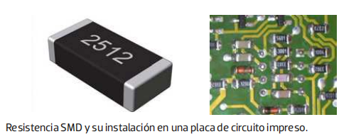
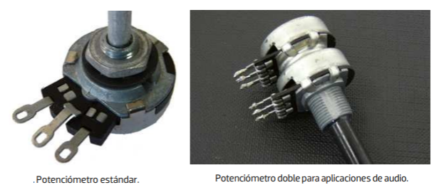

1. Resistencias
También denominadas resistores, son componentes que permiten disipar energía eléctrica en forma de calor. En electrónica, se utilizan para limitar la corriente y polarizar otros componentes como los diodos o los transistores.
Las principales características que se deben conocer de las resistencias son su valor óhmico y su potencia de disipación.
1.1. El valor óhmico
Se expresa en ohmios y en sus múltiplos y sus submúltiplos. Dicho valor suele estar impreso en el mismo cuerpo de las resistencias, y puede estar codificado de dos formas:
- Por código de colores.
- Por código alfanumérico.
1.1.1. Identificación por código de colores
Consisto en codificar el valor de la resistencia mediante un código de colores estandarizado. Dichos colores se aplican mediante bandas en el propio cuerpo de las resistencias. Así, es posible encontrar resistencias de cuatro, cinco e, incluso, seis bandas, siendo las dos primeras las más utilizadas y las que a continuación se van a estudiar.
🎨 Calculadora Interactive de Código de Colores (4 Bandas)

1.1.2. Identificación por código alfanumérico
En muchas ocasiones, especialmente en las resistencias de gran tamaño, el valor óhmico se encuentra estampado por un código alfanumérico. En este caso, se utilizan los siguientes símbolos literales para los múltiplos de ohmios.
- R: para unidades de ohmio.
- K: para kiloohmios.
- M: para megaohmio.
Para valores enteros, el símbolo se pone al final de la cantidad. Para valores con decimales, el símbolo se utiliza a modo de separador entre la parte entera y la parte decimal.


1.2. La potencia de disipación
La potencia que las resistencias son capaces de disipar viene expresada en vatios (W). Así, a mayor número de vatios, mayor tamaño de la resistencia.
Las resistencias de carbón suelen tener potencias normalizadas muy bajas de 1/8, 1/4, 1/2, 1 y 2 W, sin embargo, las resistencias bobinadas se fabrican a partir de 2 W, siendo habituales potencias de 5, 7, 10 y 50 W.
1.3. Tipos de resistencias
Las resistencias se pueden clasificar en función de su forma constructiva y composición, o según la forma de variar su valor o modo de funcionamiento.
1.3.1. Tipos de resistencias según su construcción
Así, según su construcción o composición, las resistencias se clasifican principalmente en:
- Bobinadas.
- De carbón.
- Metálicas.
Resistencias bobinadas
Su construcción se basa en un hilo resistivo bobinado sobre un núcleo cerámico. Son resistencias diseñadas para disipar grandes potencias. Se fabrican a partir de 2 W y se pueden encontrar hasta de 100 W. El valor óhmico de este tipo de resistencias no suele ser muy elevado (como máximo 1 o 2 kΩ), pudiéndose fabricar en valores inferiores al ohmio (desde 0,1 Ω).
Dependiendo del material que cubre el hilo bobinado, pueden ser cerámicas o de cubierta metálica. Estas últimas facilitan la disipación del calor generado a través de su envoltura.
El paso de corriente a través de ellas genera calor y, además, al estar constituidas por un hilo en forma de bobina, pueden presentar efectos inductivos que podrían resultar perjudiciales en los circuitos en los que se instalan, sensibles a este tipo de interferencias.
Muchos electrodomésticos utilizan resistencias de caldeo o calefactoras, que son de tipo bobinado. Estas no suelen tener valores óhmicos demasiado altos y se conectan directamente a la red eléctrica de 230 VAC, para conseguir el efecto deseado.

Resistencias de carbón
En ellas la parte resistiva se compone principalmente de grafito o carbón mezclado con otros compuestos hasta conseguir el valor que se desea en ohmios.
Las hay de dos tipos principalmente:
- De carbón aglomerado: están formadas por una masa de grafito mezclada con sílice y resina.
- De película de carbón: en el que la parte resistiva está basada en una fina película de grafito enrollada en espiral sobre un fino núcleo cerámico.
De estos dos tipos, las más empleadas, debido a su estabilidad y precisión, son las de película de carbón.
En ambos casos, la conexión con el circuito exterior se hace mediante dos cazoletas o casquillos metálicos, que deben estar en contacto de forma permanente con el grafito, que a su vez lo está con unos terminales de hilo rígido.

Resistencias metálicas
Son resistencias en las que el elemento resistivo se basa en una aleación de varios elementos metálicos en lugar de grafito o carbón.
Pueden ser de película metálica o de óxido metálico, siendo las primeras las más utilizadas en la actualidad. Las de película metálica presentan grandes ventajas frente a las de carbón, debido a su gran precisión y a su estabilidad térmica y óhmica cuando están en funcionamiento. Su composición interna tiene una estructura similar a las de película de carbón, siendo, en este caso, el material resistivo de una aleación metálica basada en cromo, níquel, titanio, etc.
La conexión con el circuito exterior se hace también mediante unos casquillos metálicos que unen los terminales con el interior de la resistencia, aunque en ocasiones se comercializan sin terminales, para su soldadura sobre las pistas de la placa de circuito impreso.
Se fabrican en potencias de hasta 2 W y son mucho más duraderas que sus equivalentes de carbón. Con ellas se consiguen mejores tolerancias y, por tanto, mayor precisión.
1.3.2. Tipos de resistencia según su modo de funcionamiento
Según su modo de funcionamiento, las resistencias pueden ser fijas y variables.
Resistencias de valor fijo
Son aquellas que se fabrican con un valor fijo, el cual no se puede variar en condiciones de funcionamiento normales.
Su símbolo es el siguiente:

Dentro de este grupo están incluidas las que se han estudiado anteriormente: resistencias bobinadas, de carbón, de película metálica, etc., pero existen otros tipos, como los que se nombran a continuación.
Redes de resistencias: son conjuntos de resistencias de valor fijo que se encuentran encapsuladas en el mismo componente. También son conocidas como arrays de resistencias, y disponen de una o más patillas comunes para facilitar su conexión.
La instalación de este tipo de componentes requiere consultar la hoja de características del fabricante para conocer cómo están conectadas internamente las resistencias.

Resistencias SMD: son resistencias miniaturizadas para instalar directamente en la placa de circuito impreso por la técnica de soldadura en superficie. El componente resistivo se consigue por una composición de sustrato de alúmina, y no disponen de patillas de conexión en forma de hilo, ya que la soldadura se realiza directamente sobre los casquillos del cuerpo de la resistencia.
Existen todo tipo de componentes, pasivos y activos, con el formato SMD. Esta tecnología ha permitido reducir enormemente todo tipo de dispositivos electrónicos respecto a los que se fabricaban hace décadas.

Resistencias variables
Son aquellas que permiten ajustar su valor, bien de forma manual o por algún parámetro o magnitud física externa (luz, temperatura, etc.).
Potenciómetros: disponen de un mando de ajuste manual, que permite variar su valor entre un mínimo y un máximo. Pueden ser giratorios, lineales-deslizantes, miniatura, múltiples, etc.

El valor de los potenciómetros se da en ohmios y corresponde al valor máximo que se puede ajustar.
La escala de los potenciómetros puede ser lineal o logarítmica. En el primer caso, el cambio de valor es constante en todo el recorrido del cursor. Sin embargo, en los potenciómetros de tipo logarítmico, el cambio de valor no es lineal, ya que el valor en ohmios avanzado por cursor, para un mismo ángulo de desplazamiento, no es el mismo si este se produce al principio o al final del recorrido. Los potenciómetros con escala logarítmica se suelen utilizar en aplicaciones de audio y sonorización.
Resistencias ajustables: también conocidas por su denominación en inglés trimmers, son resistencias variables cuyo funcionamiento es idéntico al de los potenciómetros, pero, en este caso, el ajuste se hace mediante una herramienta, como puede ser un destornillador.
Las hay de diferentes tipos y formas, pero la mayoría están diseñadas para su montaje en una placa de circuito impreso, mediante la técnica de soldadura.